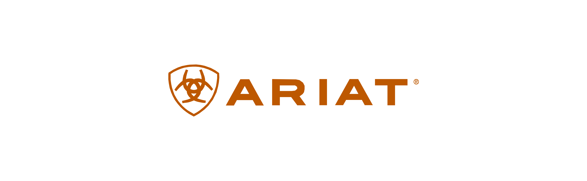

What I Led and Built
Design Landscape
Ariat is a performance footwear and apparel brand expanding rapidly across digital channels, customer segments, and global markets.
When I joined, the UX team had no formal research infrastructure, limited competitor visibility, and a need for systems that could scale insights, streamline workflows, and drive high-impact design decisions.
Responsibilities
UX Design & Strategy
AI-powered Benchmarking Tool
End-to-End Site Redesigns
UX Research Program Development
Team
UX Team
Site Merch Team
Marketing Team
Dev Team
Ariat Stakeholders
Timeline
2024 - 2025
Tools
Figma Suites
ChatGPT
Google & Microsoft Suites
I completed 25+ projects over my time at Ariat. I've highlighted 3 of my proudest ones below, but scroll down to learn more about all.
UX Research Program
Building the UX Research program for Ariat from ground up was no small task, but it's one that I took on!
We templatized everything from the timelines to user flows to presentation decks. As a result, we created a workflow that would generate 2–4 monthly studies and 2 quarterly deep-dives!
Skills: UX Research strategy, Research operations, Scalable frameworks, Shakeholder collaboration, Program design
Benchmarking Automations with AI
We wanted to move from a reactive to proactive stage to get a competitive edge within the Ecomm industry. As a result, we built a tool that would allow us to do this - without us having to lift a finger.
This AI tool tracks 25+ competitor sites with weekly automated insights, resulting in a 80% reduction in research ops workload via AI and automation.
Skills: Competitive analysis, Research automation, Visual/UI change detection, Airtable + GUI workflows, Technical prototyping
Work and Equestrian Qual Studies
We launched two quarterly quals studies during my time there, one for the Western and one for the Equestrian segment.
Notable metrics: Redesigns for Work (CLP +12.5% CTR, PLP +28.5% satisfaction rates) and Equestrian segments (HP +1.3% CVR, +1.69% AOV, +0.11% Engagement).
Skills: Qualitiative user interviews, Screener design and participant targeting, Journey and experience mapping, Brand perception and feature testing, Insight synthesis for niche audiences
My year at Ariat — in a snapshot.
Developed a fully automated competitor monitoring system that captures weekly screenshots and DOM snapshots using Playwright, detects UI and structural changes via Pixelmatch and custom diff logic, and logs AI-generated summaries into Airtable.
Integrated with Box for image hosting and built a GitHub Actions workflow for hands-free execution.
Led competitive benchmarking across 11 apparel and footwear brands to identify best-in-class product detail page (PDP) patterns for denim. Insights directly informed and kickstarted a new PDP redesign at Ariat, with a focus on elevating visual hierarchy, fit guidance, and conversion-driving elements.
Conducted a competitive benchmarking study across 12 brands to evaluate product comparison tools and guided selling experiences, with a focus on utility for Work customers. Findings sparked internal conversations about introducing a comparison tool on Ariat’s site.
Researched and redesigned Ariat’s on-site search experience across both logic and UI layers to improve relevancy, discoverability, and user flow.
Informed design best practices for Ariat’s Meta and TikTok Shop experiences, ensuring alignment with platform norms while maintaining brand integrity. Launched in June 2025, the new storefronts have driven an increase in new users originating from social media channels.
Explored strategic partnerships with third-party platforms to enhance PDP modules—specifically in product imagery, recommender zones, and user-generated reviews. This work supplemented the core research for Ariat’s broader PDP refresh initiative by surfacing scalable, high-impact enhancements.
Led a qualitative research study focused on Ariat Work customers by conducting rapid in-person interviews at the Portland store, combining short surveys with live customer journey mapping.
Insights revealed key omnichannel gaps and directly influenced upcoming feature and messaging updates across digital and retail touchpoints.
Conducted in-depth competitive analyses of Tecovas (Western) and Brunt (Work) to assess positioning, UX, and merchandising strategies across key customer segments.
Presented findings to the Senior Leadership Team, which helped spark early discussions around a potential Ariat rebrand.
Researched ways to improve Ariat’s “Complete the Look” module through competitive benchmarking and best practices from the Baymard Institute.
The project led to two new partnerships—one with an AI-driven styling platform for curated outfit generation and another offering personalized recommendations based on user behavior.
Reviewed cookie consent banner requirements across all 50 U.S. states to ensure Ariat’s implementation met evolving legal standards. The audit led to the addition of a new action button, enhancing compliance and user transparency.
Mapped the current vs. proposed user flow for Ariat Life, identifying key inconsistencies in navigation and page structure. This work led to a full redesign and restructuring of the Ariat Life experience to align more closely with the site’s overall UI system and improve cohesion across pages.
Analyzed font choices across competitor brands—specifically within the context of loyalty and rewards programs—to guide visual identity decisions. Insights directly informed the design of Ariat’s Loyalty logo, ensuring it felt both premium and consistent with brand tone.
Tested multiple versions of Ariat’s mission statement with users and benchmarked brand messaging across 12 competitors. Findings led to the rollout of a newly refined mission statement on-site, better aligning with customer values and expectations.
Developed a new infographic-style visual format to highlight key product features directly on PDPs, enhancing scannability and clarity.
Benchmarked 8 competitor approaches to sale and outlet merchandising to inform Ariat’s strategy for discount product placement. Recommendations were implemented in early 2025, shaping new product segmentation and display tactics across the site.
Conducted a qualitative UX study on English riders to assess brand perception, site experience, and performance feature communication.
Screened rigorously for discipline-specific knowledge and surfaced strategic design opportunities now being used to shape the long-term direction of Ariat’s English category online.
Developed a strategic approach to structuring product tiles on PLPs by evaluating the impact of showing style numbers versus individual colorways. Led cross-functional collaboration with the Site Merch team to implement new SKU tagging.
Conducted benchmarking across 30 competitors spanning Ariat’s three core customer segments to evaluate patterns in discounting, price presentation, and promotional timing. Insights are shaping a more strategic, data-informed approach to Ariat’s sales pricing structure.
Supported the product team by benchmarking how competitors communicate PFAS-related information on their sites, focusing on transparency and compliance.
Benchmarked 10 competitors to evaluate how “New & Featured” content is surfaced and structured across eCommerce experiences. Insights informed strategic discussions and led to the integration of a dedicated “New & Featured” section within Ariat’s main navigation.
Benchmarked 8 competitors to understand how “Best Sellers” are highlighted across different customer segments.
Improved overall site accessibility by partnering with a Figma accessibility collaborator and a privacy policy compliance agency to ensure consistent ADA adherence.
These efforts led to an 85% improvement in accessibility scoring, reinforcing Ariat’s commitment to inclusive design.
Partnered with CroMetrics to launch three live A/B tests focused on personalizing the homepage and category landing pages (CLPs). Early results show an increase in conversion rates, validating the impact of tailored content and experiences.
Led an 8-week summer internship project that spanned the full UX design process to reimagine Ariat’s loyalty program experience. Research and proposed designs directly influenced the final implementation, which is set to launch in 2025.